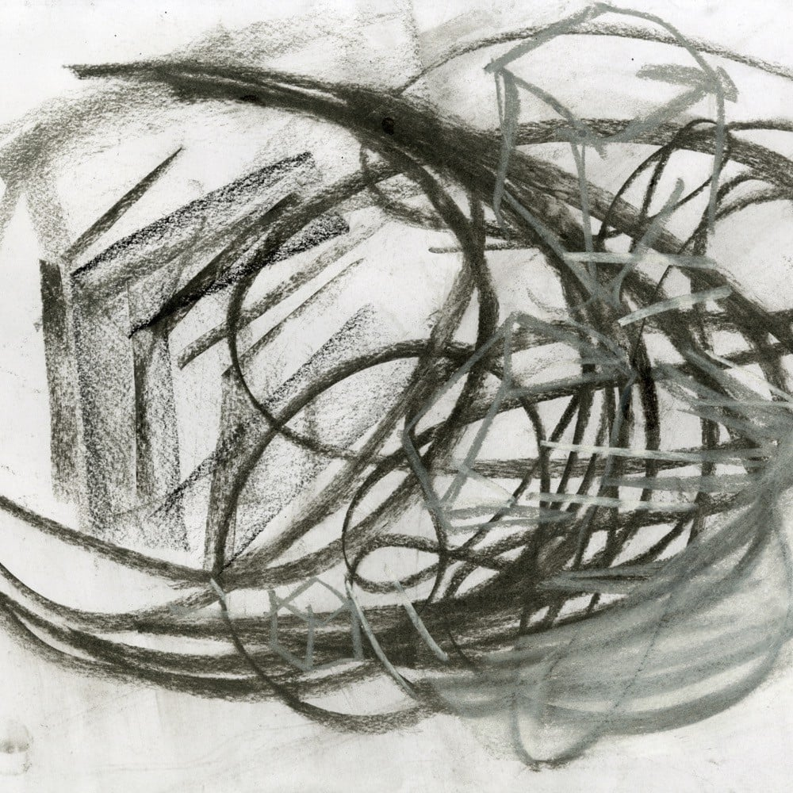

follow pink iPod on Instagram @pink.i.pod
Dear Pink iPod readers,
My phone is on my chest, playing Eistir’s first album. It’s the closest I can get to that first listen; when I listened to “Charcoal” for the first time, my body became a cave full of trees, and Ewan was digging in and delicately playing from inside my lungs. In a calming way, not in my surgical metaphors way. Today, I’m writing to you about a mystery that hung softly over my head as I was thinking about this album: a light.
It kept coming back while I was writing my questions. Something beyond the folk guitar and the escalating production made the whole record luminous, so I went and looked: where’s the light, like, why can’t I locate it? Fuck, every time I got close, it moved. Sure, okay, there’s the laugh in “Passenger”. The voices, obviously, open and clear. But that wasn’t it.
About 10 listens in, on the dearest evening of November 18th, I got it: Ewan is smiling. They smile when they sing that first song; they’re on the verge of laughing, sharing one microphone with Tess Duffin. But there’s also the smile in the second one, in the third one, etc. At first, I wanted to describe it as a sunny album, but there is evidently a great deal of Irish fog, and of the past, in there. My obsession paid off; it’s the smile which brings the much quieter force, a smile that is not peace, a smile that isn’t certain, a smile that isn’t sunny. In the end it was quite simple: it is a smile barrelling headfirst towards unknown good. What a beautiful title. Like the production, it trickles, a thousand little spots lighting up and shutting off asynchronously.
At 25, Ewan has been producing for almost a decade, recording London artists such as Drive Your Plow and newbuild, as well as filming gigs from the crowd. They see themselves as the scene’s celebrator; you’ll notice it by peeking through the credits.
Dear readers, we are the lucky witnesses to the beginning of Eistir. As I now hand you this project, please take it delicately into your hands, breathe it, pass it on.
Pink iPodly yours,
Pink iPod: Could you first tell me about the name of the band, Eistir? Is it Irish? Are you Irish?
EWAN: My mum’s side are from County Derry and we spend a lot of time in an area called Binevenagh on the North coast. It’s wild and sprawling and I can’t help but write when I’m there. I was looking for a name that would honour that and found Eistir in an old book of Irish baby names. It’s a name meaning star often given to girls born around Easter, a symbol of renewal and a guiding light.
Pink iPod: Do you remember the first song you ever wrote?
EWAN: Not really! I remember picking up a guitar around 16 and learning other people’s songs, then, slowly, fragments of my own writing emerged and eventually those became songs, but I can’t think of a moment where it all came together. I started writing for Eistir this time in 2024.
Pink iPod: I would like to talk about the title and the eponymous song on your album, “This Is You Barrelling Headfirst Towards Unknown Good”. The song almost reads like a dream, or a “real” experience you had. Can you tell me more about the process of writing that song and why it ended up being the name of the album?
EWAN: All of the songs on the album emerged in this two month period where I felt I was finally starting to get signs from the universe that my hard work was paying off, but at the same time, I was working harder than ever and constantly in and out of burnout. I still am. Feeling like you’re being dragged through a hedge backwards towards your wildest hopes and dreams feels like a really common experience for young people in this time in history, especially in London. This city takes so much from you but also gives so much in terms of community and opportunity, especially in music. I still feel like I’m barrelling headfirst towards unknown good, and I’ve returned to these songs a lot since I wrote them, they guide me.
Pink iPod: Regarding the structure of the album, while you take us through doubt and pain, it seems the album starts and lands in quite a luminous way. It starts with “I’m so in love” and ends in “I am safe”. Is it really a loop or would you distinguish these two feelings?
EWAN: The album is definitely cyclical, but not in some designed conceptual way, more in that it reflects the volatile nature of trying to pursue something. It’s more about the constant shifting between fear and safety, and also the crucial importance of gratitude in times of struggle.
Pink iPod: You’re a producer, an artist, and an active audience, equipped with your camcorder. I think you have a very complete view of the scene in London. First, do you feel like you’re part of a scene? If so, which one? Is that scene more of a community or does it also have a sound?
EWAN: I would say my biggest role in the scene is a celebrator. That’s why I’m at shows with the camcorder and recording bands in the studio. I’m working to archive this moment and like to imagine this time alongside other eras in music where iconic artists and timeless sounds have emerged. I would say the sound of the scene currently is that it’s this huge morphing thing that’s drawing from countless influences, its diversity is its strength.
When it comes to participating with Eistir, I draw from a different place. I want the shows and the recordings to impact people. I want people to have the experience I’ve had at shows that have changed my life and with albums that have saved my day. Leaving a venue changed with an album that lives with you, guides you home and somehow makes you feel seen is a real superpower of this community, and in that way, I’m participating.
Pink iPod: How long have you been making music? Was there a trigger to start making this album or was it always a project you had in mind?
EWAN: I’ve been producing for almost a decade now, and always had songwriting as my dearest artistic practice. It was and still is the most powerful force for processing my life. Eistir came about thanks to being inspired by hundreds of London bands I’d watched and met through production. I wanted to get up there!
I’d written four or five songs when I wrote the title track, and it was then that I realised I was making the album. I’d had my guitar in this open FACGAC tuning for a while, trying to write a song in each capo position along the fretboard. This was mainly a songwriting exercise, but I found the songs kept flowing and I was really transmitting something meaningful, and so nine of those made up the album.
Pink iPod: The production on the album kind of feels like a magic forest. How, if at all, were you inspired by nature and folklore when making the project?
EWAN: Folklore is a huge part of Eistir. I think songwriting is the closest thing we have in modern culture to immortalising experience in story, especially live music. Nature is always an influence, whether heard or unheard, as it’s always where my songs emerge from. I feel like we all have this faith in music as a transcendent power, and it’s in nature where I’m able to connect with that force.
Pink iPod: What is your biggest non-musical inspiration at the moment?
EWAN: Seamus Heaney! I’m working my way through his complete translations.
Pink iPod: What would be the ideal venue set up for you to play the album?
EWAN: EartH Theatre in Hackney has always been my dream venue for Eistir, after an Adrienne Lenker show changed my life there in 2023. It’s cavernous and natural sounding, with everyone sat on benches. I would also love to play in Mussenden Temple, which overlooks my favourite beach in the world on the North coast of Ireland.
Pink iPod: Who are the backing vocals and beautiful laughs on Passenger?
EWAN: Illustrator extraordinaire and maker of wonderful things Tess Duffin! We’ve been together through a tumultuous and fantastic couple of years, and that’s what Passenger is about. Everyone is barrelling headfirst towards their own future and we are all here as each other’s witness. I was given a songwriting prompt from a friend to ‘write a song as a gift for somebody’, and this is what I wrote for Tess. We crowded around the same microphone in the recording, and it’s one of my favourite parts of the album. I’m grateful to have the record of us in our early twenties just trying our damn best together.
Pink iPod: It seems a lot of the album centers around a desire for safety, safety in isolation in particular, a “place to retreat”. What does safety mean to you? Is being alone or isolated a way to be safe for you?
EWAN: I think safety is a trust placed in universal forces that if you follow your intuition, act lovingly and stay committed to your truth that you will be safe from harm.
Pink iPod: What is an album that makes you feel safe?
EWAN: Undercurrent, Bill Evans & Jim Hall
Pink iPod: What’s your place to retreat?
EWAN: The North coast of Ireland, and my memories of that place
Pink iPod: What song would you play at your funeral?
EWAN: The Finale song from School of Rock
